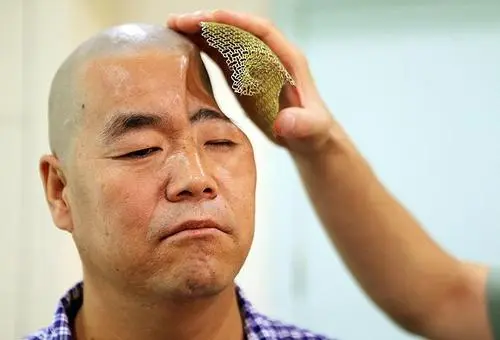
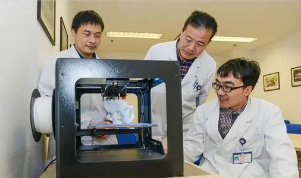

臓器移植ドナーの不足は、常に世界の医学界が直面している大きな問題の1つです。 従来の方法には、合併症、二次的損傷、限られたドナー源などの潜在的な問題が必然的にあります。 3D印刷技術は、これらの問題を解決する可能性を秘めています。パーソナライズされた組織工学の足場を迅速に製造し、細胞を使用して組織の欠陥をその場で修復し、組織や臓器を直接印刷することもできます。 印刷されたインプラントと臓器は、患者の損傷した組織と完全に一致するだけでなく、材料の微細構造と細胞配列を調節し、細胞の成長と分化を促進することができます。 したがって、このタイプのインプラントは、組織の修復を達成し、最終的にはドナー不足の問題を解決することが期待されています。

